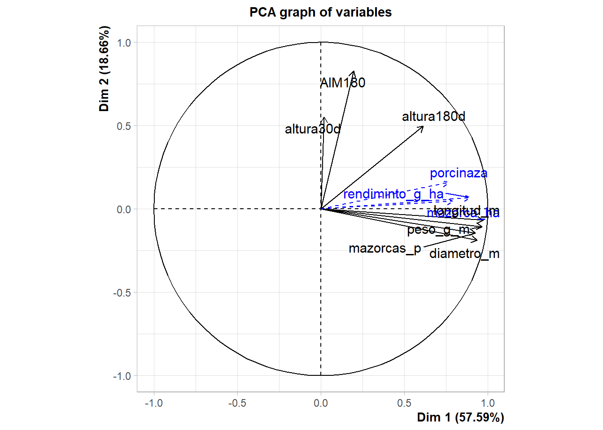

1 + 1[1] 2Quarto enables you to weave together content and executable code into a finished document. To learn more about Quarto see https://quarto.org.
When you click the Render button a document will be generated that includes both content and the output of embedded code. You can embed code like this:
1 + 1[1] 2You can add options to executable code like this
[1] 4The echo: false option disables the printing of code (only output is displayed). #cargar paquetees
library(readxl)
library(lme4)Cargando paquete requerido: Matrixlibrary(emmeans)Welcome to emmeans.
Caution: You lose important information if you filter this package's results.
See '? untidy'library(FactoMineR)
library(tidyverse)── Attaching core tidyverse packages ──────────────────────── tidyverse 2.0.0 ──
✔ dplyr 1.1.4 ✔ readr 2.1.5
✔ forcats 1.0.1 ✔ stringr 1.5.2
✔ ggplot2 4.0.0 ✔ tibble 3.3.0
✔ lubridate 1.9.4 ✔ tidyr 1.3.1
✔ purrr 1.1.0 ── Conflicts ────────────────────────────────────────── tidyverse_conflicts() ──
✖ tidyr::expand() masks Matrix::expand()
✖ dplyr::filter() masks stats::filter()
✖ dplyr::lag() masks stats::lag()
✖ tidyr::pack() masks Matrix::pack()
✖ tidyr::unpack() masks Matrix::unpack()
ℹ Use the conflicted package (<http://conflicted.r-lib.org/>) to force all conflicts to become errorslibrary(googlesheets4)
library(multcomp)Cargando paquete requerido: mvtnorm
Cargando paquete requerido: survival
Cargando paquete requerido: TH.data
Cargando paquete requerido: MASS
Adjuntando el paquete: 'MASS'
The following object is masked from 'package:dplyr':
select
Adjuntando el paquete: 'TH.data'
The following object is masked from 'package:MASS':
geyser#importar base de datos
url <- "https://docs.google.com/spreadsheets/d/1o4mtAkI1lBgoUzqDT-e7cIhIwh_K5m6CoxAx0ETvwXU/edit?gid=1753270824#gid=1753270824"
gs <- url %>%
as_sheets_id()
fb <- gs %>%
range_read(sheet = "fb")! Using an auto-discovered, cached token. To suppress this message, modify your code or options to clearly consent to
the use of a cached token. See gargle's "Non-interactive auth" vignette for more details: <https://gargle.r-lib.org/articles/non-interactive-auth.html>ℹ The googlesheets4 package is using a cached token for
'7361085391@untrm.edu.pe'.✔ Reading from "UII_G1".✔ Range ''fb''.str(fb)tibble [32 × 13] (S3: tbl_df/tbl/data.frame)
$ tratamientos : chr [1:32] "T1" "T2" "T3" "T4" ...
$ densidad : chr [1:32] "0.8x0.4" "0.8x0.4" "0.8x0.4" "0.8x0.4" ...
$ porcinaza : num [1:32] 0 160 320 480 0 160 320 480 0 160 ...
$ bloque : chr [1:32] "I" "I" "I" "I" ...
$ altura30d : num [1:32] 23.1 20 23.4 26.2 20.7 24.5 23.1 23 23.5 25.7 ...
$ altura180d : num [1:32] 193 196 199 202 189 ...
$ mazorcas_p : num [1:32] 1.1 1.1 1.1 1.4 1.3 1.4 1.5 1.8 1 1.1 ...
$ longitud_m : num [1:32] 12.3 14 14.4 16.1 13 16.3 16.8 21.4 12.2 13.9 ...
$ diametro_m : num [1:32] 4.5 4.4 4.8 5 4.9 5.2 5.4 6 4.4 4.7 ...
$ peso_g_m : num [1:32] 89.6 100.6 109.4 132.8 112.8 ...
$ AIM180 : num [1:32] 82 81.4 79.7 93.2 99 ...
$ mazorca_ha : num [1:32] 35156 35156 35156 42969 31250 ...
$ rendiminto_g_ha: num [1:32] 2801 3145 3418 4148 2819 ...#modelo estadistico
\[rendimineto=/mu+bloque+prociza+densidad+procinza*densidad+e\]
library(lme4)
md <- lm(rendiminto_g_ha ~ bloque + porcinaza*densidad, data = fb)
anova(md)Analysis of Variance Table
Response: rendiminto_g_ha
Df Sum Sq Mean Sq F value Pr(>F)
bloque 3 74043 24681 0.5983 0.6221
porcinaza 1 16749536 16749536 406.0323 < 2.2e-16 ***
densidad 1 1223048 1223048 29.6484 1.184e-05 ***
porcinaza:densidad 1 1374185 1374185 33.3122 5.141e-06 ***
Residuals 25 1031293 41252
---
Signif. codes: 0 '***' 0.001 '**' 0.01 '*' 0.05 '.' 0.1 ' ' 1#comparcion de medias
library(emmeans)
library(multcomp)
library(multcompView)
library(ggplot2)ggplot(fb, aes(x = porcinaza, y = rendiminto_g_ha, fill = factor(densidad))) +
geom_boxplot() +
labs(x = "Porcinaza", y = "Rendimiento (g/ha)", fill = "Densidad")#analis multivariable de la base de datos fb, hacer un grafico PCA agrupado por densidad y porcinaza usando el paquete FactoMineR
library(FactoMineR)
PCA(fb, quanti.sup = c(3, 12, 13), quali.sup = c(1, 2, 4), graph = FALSE)**Results for the Principal Component Analysis (PCA)**
The analysis was performed on 32 individuals, described by 13 variables
*The results are available in the following objects:
name
1 "$eig"
2 "$var"
3 "$var$coord"
4 "$var$cor"
5 "$var$cos2"
6 "$var$contrib"
7 "$ind"
8 "$ind$coord"
9 "$ind$cos2"
10 "$ind$contrib"
11 "$quanti.sup"
12 "$quanti.sup$coord"
13 "$quanti.sup$cor"
14 "$quali.sup"
15 "$quali.sup$coord"
16 "$quali.sup$v.test"
17 "$call"
18 "$call$centre"
19 "$call$ecart.type"
20 "$call$row.w"
21 "$call$col.w"
description
1 "eigenvalues"
2 "results for the variables"
3 "coord. for the variables"
4 "correlations variables - dimensions"
5 "cos2 for the variables"
6 "contributions of the variables"
7 "results for the individuals"
8 "coord. for the individuals"
9 "cos2 for the individuals"
10 "contributions of the individuals"
11 "results for the supplementary quantitative variables"
12 "coord. for the supplementary quantitative variables"
13 "correlations suppl. quantitative variables - dimensions"
14 "results for the supplementary categorical variables"
15 "coord. for the supplementary categories"
16 "v-test of the supplementary categories"
17 "summary statistics"
18 "mean of the variables"
19 "standard error of the variables"
20 "weights for the individuals"
21 "weights for the variables" library(ggplot2)
PCA(fb, quanti.sup = c(3, 12, 13), quali.sup = c(1, 2, 4), graph = TRUE)
**Results for the Principal Component Analysis (PCA)**
The analysis was performed on 32 individuals, described by 13 variables
*The results are available in the following objects:
name
1 "$eig"
2 "$var"
3 "$var$coord"
4 "$var$cor"
5 "$var$cos2"
6 "$var$contrib"
7 "$ind"
8 "$ind$coord"
9 "$ind$cos2"
10 "$ind$contrib"
11 "$quanti.sup"
12 "$quanti.sup$coord"
13 "$quanti.sup$cor"
14 "$quali.sup"
15 "$quali.sup$coord"
16 "$quali.sup$v.test"
17 "$call"
18 "$call$centre"
19 "$call$ecart.type"
20 "$call$row.w"
21 "$call$col.w"
description
1 "eigenvalues"
2 "results for the variables"
3 "coord. for the variables"
4 "correlations variables - dimensions"
5 "cos2 for the variables"
6 "contributions of the variables"
7 "results for the individuals"
8 "coord. for the individuals"
9 "cos2 for the individuals"
10 "contributions of the individuals"
11 "results for the supplementary quantitative variables"
12 "coord. for the supplementary quantitative variables"
13 "correlations suppl. quantitative variables - dimensions"
14 "results for the supplementary categorical variables"
15 "coord. for the supplementary categories"
16 "v-test of the supplementary categories"
17 "summary statistics"
18 "mean of the variables"
19 "standard error of the variables"
20 "weights for the individuals"
21 "weights for the variables" hacer un resumen de porcinaza por dosis para las variables cuantitativas usando tidyverse
fb %>%
group_by(porcinaza) %>%
summarise(across(where(is.numeric), mean, na.rm = TRUE))Warning: There was 1 warning in `summarise()`.
ℹ In argument: `across(where(is.numeric), mean, na.rm = TRUE)`.
ℹ In group 1: `porcinaza = 0`.
Caused by warning:
! The `...` argument of `across()` is deprecated as of dplyr 1.1.0.
Supply arguments directly to `.fns` through an anonymous function instead.
# Previously
across(a:b, mean, na.rm = TRUE)
# Now
across(a:b, \(x) mean(x, na.rm = TRUE))# A tibble: 4 × 10
porcinaza altura30d altura180d mazorcas_p longitud_m diametro_m peso_g_m
<dbl> <dbl> <dbl> <dbl> <dbl> <dbl> <dbl>
1 0 23.0 188. 1.19 12.7 4.72 99.3
2 160 23.2 198. 1.24 15.0 4.79 121.
3 320 23.1 197. 1.39 15.6 5.03 144.
4 480 23.3 205. 1.55 18.8 5.52 173.
# ℹ 3 more variables: AIM180 <dbl>, mazorca_ha <dbl>, rendiminto_g_ha <dbl>fb %>%
group_by(porcinaza) %>%
summarise(across(where(is.numeric), mean, na.rm = TRUE))# A tibble: 4 × 10
porcinaza altura30d altura180d mazorcas_p longitud_m diametro_m peso_g_m
<dbl> <dbl> <dbl> <dbl> <dbl> <dbl> <dbl>
1 0 23.0 188. 1.19 12.7 4.72 99.3
2 160 23.2 198. 1.24 15.0 4.79 121.
3 320 23.1 197. 1.39 15.6 5.03 144.
4 480 23.3 205. 1.55 18.8 5.52 173.
# ℹ 3 more variables: AIM180 <dbl>, mazorca_ha <dbl>, rendiminto_g_ha <dbl>fb$trt <- paste(fb$porcinaza, fb$densidad, sep = "_")#analisi multivariado usando la base de datos fb, hacer un grafico PCA agrupado por densidad y porcinaza usando el paquete FactorMineR
library(FactoMineR)